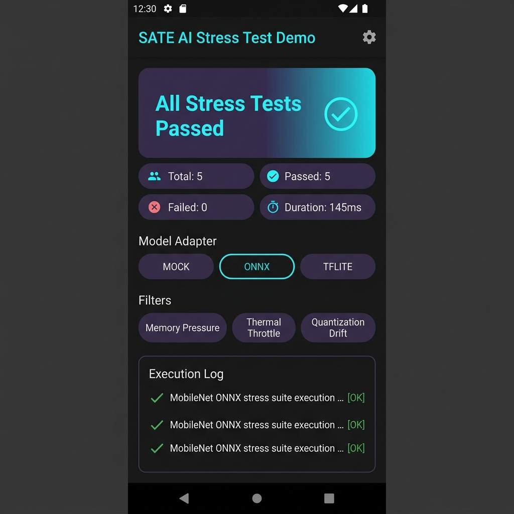

A Fault Injection Framework for On-Device AI Models in Flutter
Catch failure scenarios, out-of-memory crashes, and model degradation before your users do.

A comprehensive suite designed specifically for on-device AI stress testing.
Injects artificial memory overhead to verify how your app handles resource exhaustion and low-memory conditions without crashing.
Feeds empty payloads, 1MB oversized text strings, and binary garbage into model runtimes to ensure robust input handling.
Simulates cumulative precision loss across repeated inference runs to evaluate model stability under quantized constraints.
Emulates mobile hardware thermal degradation and CPU clock throttling under sustained high-load workloads.
Injects artificial latency spikes and quality degradation to test fallback logic and error handling paths.
Enforces minimum prediction confidence thresholds to ensure output reliability before serving inference results.
Built-in model adapters for ONNX Runtime and TensorFlow Lite (`tflite_flutter`), plus a decoupled `MockAdapter` for unit testing.
Export stress reports as JSON/Markdown, analyze results in an interactive web dashboard, or integrate directly into CI/CD pipelines.
Add SATE AI to your Flutter project in seconds.
dependencies:
sate_ai: ^0.7.0import 'package:sate_ai/sate_ai.dart';
Future<void> main() async {
// Wrap model runtime in an adapter (or use MockAdapter)
final model = MockAdapter(modelId: 'llama-3-8b');
// Execute stress testing suite
final report = await SateAI.stress(
model: model,
injectors: [
MemoryPressureInjector(limitMb: 150),
MalformedInputInjector(),
ThermalThrottleInjector(
model: model,
temperatureStep: 10,
maxTemperature: 85,
),
],
timeout: const Duration(seconds: 45),
);
if (report.passed) {
print('Model passed all stress scenarios!');
} else {
print('Failure detected: ${report.failureCount} issues found.');
print(report.toMarkdown());
}
}Explore guides, API references, and theoretical background.
Complete Dart class and method reference hosted on pub.dev.
In-depth architectural overview, CLI options, and CI/CD workflow integration.
Guidelines for creating custom fault injectors, model adapters, and submitting PRs.
Read the research paper, architecture diagrams, and download PDF/LaTeX sources.